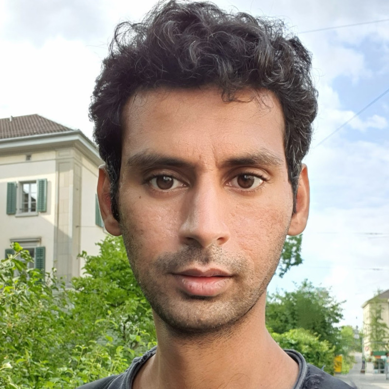

|
Mansoor Nasir Cheema
I'm a software developer at Thoughtsworks Munich where I focus on design and development of maintainable and well-architectured software. Particularly I am involved in programming ML models, cloud based Microservices, and C++ SDK's for edge devices. I completed MSc. Informatics at Technical University of Munich where I specialized in Computer Vision and Machine Learning with applications in Robotic Perception and 3D Scene Understanding. Earlier, I was an exchange student at ETH Zurich where I wrote my Thesis at Autonomous System Lab under the supervision of Dr. Lukas Schmid , Dr. Victor Reijgwart and Prof. Roland Siegwart. I'm interested in 3D computer vision and deep learning, particularly 3D semantic scene completion & generation, multi-modal spatial intelligence and long term perception. |
 |
{kind=link}
Research |
 |
SC-Explorer: Incremental 3D Scene Completion for Safe and Efficient
Exploration Mapping and Planning
Lukas Schmid, Mansoor Nasir Cheema, Victor Reijgwart, Roland Siegjwart, Federico Tombari, Cesar Cadena Preprint, 2022 video / code / arXiv Incrementally fusing 3D semantic scene completions complementing volumetric semantic mapping for safe and efficient autonomous exploration. |

|
Leveraging Deep Learnt scene compleiton for fast autonomous exploration
mapping and planning
Mansoor Nasir Cheema MSc. Thesis, ETH Zurich Supervisors: Lukas Schmid, Victor Reijgwart, Federico Tombari, Roland Siegjwart paper / code |
Teaching |
| Teaching Assistant, Hands on Deep Learning, Summer 2020 |
Opensource |
|
Adaptive Log Softmax
Contribution for C++ Neural Network API, PyTorch 1.5.0
documentation / code / reference paper Programmed an efficient approximation of softmax based on paper by Edouard Grave et al. that scales with very large vocabularies boosting performance of Large Language Models. |
|
|
Local Resposne Normalization
Contribution for C++ Neural Network API, PyTorch 1.4.0
documentation / code Programmed local response normalization activation layer along with the unit tests |
|
Adapted from source code. |